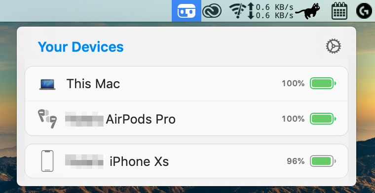
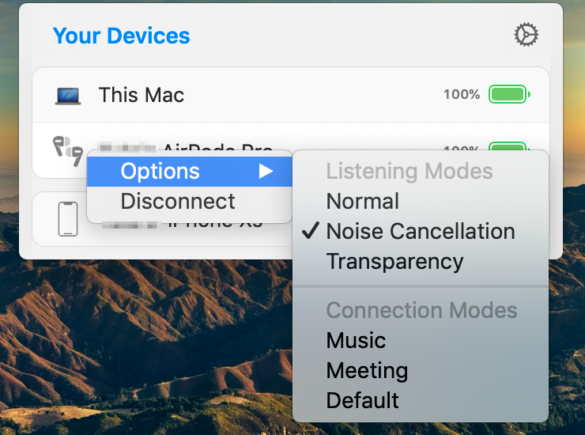

AirPodsをMacで使うなら「AirBuddy2」は必須
Contents
MacにはAirPods用の機能がほぼない
もちろんどっちもApple製品なので接続などは普通にできますが、iOSやiPadOSに比べると連携機能が少ないです。
接続するにも、音声のメニューで出力先を選ぶか、BluetoothのメニューからAirPodsの項目で「接続」を押す必要があります。
さらに、AirPods Proが今何モードなのか確認するのも手間がかかります。
Macも今後のアップデートで改善されるのかもしれませんが、自分の場合は都合上1アップデートできない状況です。
AirBuddy2を使おう
「AirBuddy2」は、大手Apple情報サイト9to5Macのライターの方が開発したアプリです。
これを使えば、AirPodsなどのApple製イヤホン・ヘッドホンの接続や、モード切り替え、バッテリー残量の確認などを簡単に行えます。

さらに凄い点が、AirPods以外にも色々な製品に対応しているという点です。
iPhone、iPad、AirPodsシリーズ、Beatsシリーズ、Magic Keyboard、Magic Trackpad、Magic Mouse、Apple TV等に対応しているそうです。
また、iPhoneとの切り替えや、このアプリを入れた他のMacと切り替える機能や、Catalina以前とBig Sur以降用（iOS風）のウィジェットも用意されています。
メニューバーのアイコンでメニューを開くだけで、手元のApple製品を操作できるので本当に便利です。

AirBuddy2の紹介動画です。
AirBuddy 2 is now available for pre-order. Launching November 11. https://t.co/lB4Tc5ahGf pic.twitter.com/BEIqXcxAMI
— AirBuddy (@airbuddyapp) October 14, 2020
デメリット
日本語は非対応
英語しか対応していないため、設定画面が分かりづらい気がしますs。
有料
ダウンロードには、1000円ほど払って購入する必要があります。
機能が豊富なので仕方ない気もしますが、アプリとしては少し高いと思います。
注意事項
古いOSでは一部の機能が使えない
AirPodsを繋げるとこのようなiOS風の画面が出るのですが、macOS Mojave（10.14）で開くと、右上に注意マークが出て、「10.15以上じゃないと正確なバッテリー残量が分からないよ！」というメッセージが表示されてしまいます。
確かにケースの残量表示が0%になっていますね。
これは最新のOSにアップデートすれば解決しますし、恐らく別の機種では大丈夫だと思うので、ほとんどの人は気にする必要はないと思いますが、「Mojave以前でAirPods Proを使いたい」という人はご注意ください。
おわりに
Apple製のデバイス（特にAirPods）をMacで使っている人にはオススメです。
このAirBuddy2は、公式サイトから1099円で購入できます。
-
macOS Catalina（10.15）以降は32bitの古いアプリが動かない ↩︎
Comments
Show Comments